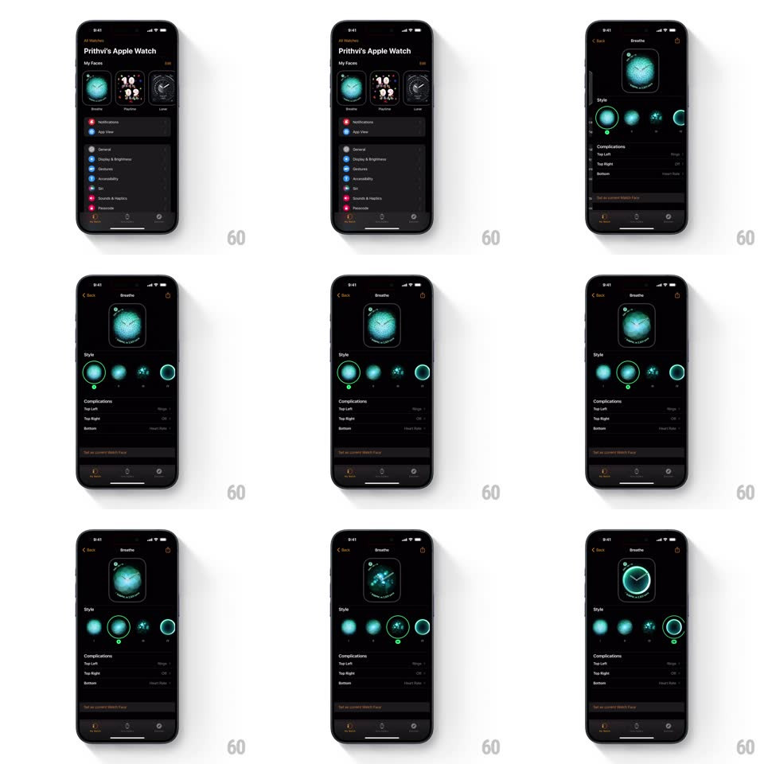

Media
Frame-by-frame

Rebuild this interaction 1:1: Apple Watch's face style picker - a green selection ring springs between circular style thumbnails while the face preview above updates to match.

Rebuild this interaction 1:1: Apple Watch's face style picker - a green selection ring springs between circular style thumbnails while the face preview above updates to match. ## Integration Integration: stack-agnostic spec - springs given as stiffness/damping, timed motions as duration + curve; map every value to your framework and animation library of choice. ## Scene The Watch app's face editor (Breathe face): a live face preview at top, then a "Style" row of circular thumbnails (variants of the face), and a Complications list below. The selected thumbnail carries a green ring with a small tick dot. ## Motion spec Pattern: sliding selection ring with synced preview. - Tap a thumbnail: the green ring detaches and glides to the new thumbnail (spring ~380/26), stretching slightly along its travel direction (scale 1.08 along the motion axis) and settling with a soft wobble; the tick dot follows pinned to the ring's bottom. - As the ring starts moving, the face preview crossfades to the new style (300ms, ease-out) with a subtle scale breath (0.97 to 1, spring ~360/24) - the variant's own idle animation (the Breathe petals pulsing) restarts in the new colorway. - The tapped thumbnail itself does a quick press dip (scale 0.92, 120ms spring back) under the arriving ring. - The Complications rows below are unaffected; only the Style row and preview animate. - Horizontal swipe across the Style row scrolls it with momentum; the ring rides its thumbnail during scroll without lag. ## Calibration - Ring travel time is distance-independent (~300ms) - long hops don't dawdle. - Preview updates at ring departure, not arrival: selection feels instant. ## Reduced motion Ring jumps; preview crossfades. ## Don't miss - The ring is a thin green outline with a detached tick dot, not a filled highlight. - The face preview keeps animating (idle pulse) in every state - it is a live face, not an image.